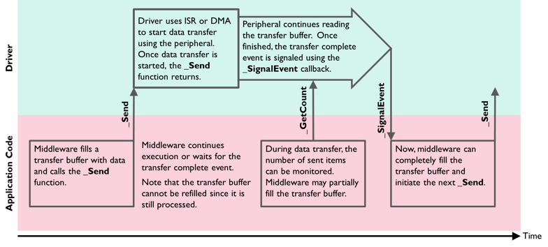

This section gives an overview of the general operation of CMSIS-Drivers. It explains the Common Driver Functions that are common in all CMSIS-Drivers along with the Function Call Sequence. The topic Data Transfer Functions describes how data read/write operations to the peripheral are implemented.
Each CMSIS-Driver defines an Access Struct for calling the various driver functions and each peripheral (that is accessed via a CMSIS-Driver) has one Driver Instance.
Common Driver Functions
Each CMSIS-Driver contains these functions:
- GetVersion: can be called at any time to obtain version information of the driver interface.
- GetCapabilities: can be called at any time to obtain capabilities of the driver interface.
- Initialize: must be called before powering the peripheral using PowerControl. This function performs the following:
- allocate I/O resources.
- register an optional SignalEvent callback function.
- SignalEvent: is an optional callback function that is registered with the Initialize function. This callback function is initiated from interrupt service routines and indicates hardware events or the completion of a data block transfer operation.
- PowerControl: Controls the power profile of the peripheral and needs to be called after Initialize. Typically, three power options are available:
ARM_POWER_FULL: Peripheral is turned on and fully operational. The driver initializes the peripheral registers, interrupts, and (optionally) DMA.ARM_POWER_LOW: (optional) Peripheral is in low power mode and partially operational; usually, it can detect external events and wake-up.ARM_POWER_OFF: Peripheral is turned off and not operational (pending operations are terminated). This is the state after device reset.
- Uninitialize: Complementary function to Initialize. Releases the I/O pin resources used by the interface.
- Control: Several drivers provide a control function to configure communication parameters or execute miscellaneous control functions.
The section Function Call Sequence contains more information on the operation of each function. Additional functions are specific to each driver interface and are described in the individual sections of each driver.
Cortex-M Processor Mode
The CMSIS-Driver functions access peripherals and interrupts and are designed to execute in Privileged mode. When calling CMSIS-Driver functions from RTOS threads, it should be ensure that these threads execute in Privileged mode.
Function Call Sequence
For normal operation of the driver, the API functions GetVersion, GetCapabilities, Initialize, PowerControl, Uninitialize are called in the following order:
The functions GetVersion and GetCapabilities can be called any time to obtain the required information from the driver. These functions return always the same information.
Start Sequence
To start working with a peripheral the functions Initialize and PowerControl need to be called in this order:
- Initialize typically allocates the I/O resources (pins) for the peripheral. The function can be called multiple times; if the I/O resources are already initialized it performs no operation and just returns with ARM_DRIVER_OK.
- PowerControl (
ARM_POWER_FULL) sets the peripheral registers including interrupt (NVIC) and optionally DMA. The function can be called multiple times; if the registers are already set it performs no operation and just returns with ARM_DRIVER_OK.
Stop Sequence
To stop working with a peripheral the functions PowerControl and Uninitialize need to be called in this order:
The functions PowerControl and Uninitialize always execute and can be used to put the peripheral into a Safe State, for example after any data transmission errors. To restart the peripheral in a error condition, you should first execute the Stop Sequence and then the Start Sequence.
- PowerControl (
ARM_POWER_OFF) terminates any pending data transfers with the peripheral, disables the peripheral and leaves it in a defined mode (typically the reset state).
- when DMA is used it is disabled (including the interrupts)
- peripheral interrupts are disabled on NVIC level
- the peripheral is reset using a dedicated reset mechanism (if available) or by clearing the peripheral registers
- pending peripheral interrupts are cleared on NVIC level
- driver variables are cleared
- Uninitialize always releases I/O pin resources.
Shared I/O Pins
All CMSIS-Driver provide a Start Sequence and Stop Sequence. Therefore two different drivers can share the same I/O pins, for example UART1 and SPI1 can have overlapping I/O pins. In this case the communication channels can be used as shown below:
SPI1drv->Initialize (...);
...
SPI1drv->Uninitialize ();
...
USART1drv->Initialize (...);
...
USART1drv->Uninitialize ();
Data Transfer Functions
A CMSIS-Driver implements non-blocking functions to transfer data to a peripheral. This means that the driver configures the read or write access to the peripheral and instantly returns to the calling application. The function names for data transfer end with:
- Send to write data to a peripheral.
- Receive to read data from a peripheral.
- Transfer to indicate combined read/write operations to a peripheral.
- Note
- As an enhancement of CMSIS implementation, blocking(polling) functions are also supported.
During a data transfer, the application can query the number of transferred data items using functions named GetxxxCount. On completion of a data transfer, the driver calls a callback function with a specific event code.
During the data exchange with the peripheral, the application can decide to:
- Wait (using an RTOS scheduler) for the callback completion event. The RTOS is controlled by the application code which makes the driver itself RTOS independent.
- Use polling functions that return the number of transferred data items to show progress information or partly read or fill data transfer buffers.
- Prepare another data transfer buffer for the next data transfer.
The following diagram shows the basic communication flow when using the _Send function in an application.

Non-blocking Send Function
Access Struct
A CMSIS-Driver publishes an Access Struct with the data type name ARM_DRIVER_xxxx that gives to access the driver functions.
Code Example: Function Access of the SPI driver
typedef struct _ARM_DRIVER_SPI {
int32_t (*Uninitialize) (void);
int32_t (*Send) (const void *data, uint32_t num);
int32_t (*Receive) ( void *data, uint32_t num);
int32_t (*Transfer) (const void *data_out, void *data_in, uint32_t num);
uint32_t (*GetDataCount) (void);
int32_t (*Control) (uint32_t control, uint32_t arg);
Driver Instances
A device may offer several peripherals of the same type. For such devices, the CMSIS-Driver publishes multiple instances of the Access Struct. The name of each driver instance reflects the names of the peripheral available in the device.
Code Example: Access Struct for three SPIs in a microcontroller device.
The access functions can be passed to middleware to specify the driver instance that the middleware should use for communication.
Example:
\\ inside the middleware the SPI driver functions are called with:
\\ Drv_spi->function (...);
\\ setup middleware
init_middleware (&Driver_SPI1);
:
init_middleware (&Driver_SPI2);
Driver Configuration
For a device family, the drivers may be configurable. The configuration options are stored in a central file with the name RTE_Device.h. However, the configuration of the drivers itself is not part of the CMSIS-Driver specification.
Code Example
The following example code shows the usage of the SPI interface.
#include <stdio.h>
#include <string.h>
#define MASTER_BOARD
#define TRANFER_DATA_WIDTH_8_BITS (8)
#define TRANFER_DATA_WIDTH_16_BITS (16)
#define TRANSFER_DATA_WIDTH TRANFER_DATA_WIDTH_8_BITS
#define TRANSFER_SIZE (18)
#define ARM_SPI_FRAME_FROMAT ARM_SPI_CPOL0_CPHA0
#define RTE_SPI_IO_MODE RTE_SPI0_IO_MODE
#define TRANSFER_SPEED (2000000)
#define BUTTON_GPIO_INSTANCE (0)
#define BUTTON_GPIO_PIN (0)
#define BUTTON_PAD_INDEX (5)
#define BUTTON_PAD_ALT_FUNC (PAD_MuxAlt0)
#ifdef MASTER_BOARD
#else
#endif
#define RetCheck(cond, v1) \
do{ \
if (cond == ARM_DRIVER_OK) \
{ \
printf("%s OK\n", (v1)); \
} else { \
printf("%s Failed !!!\n", (v1)); \
} \
}while(false)
static volatile uint32_t isTransferDone;
static volatile bool isButttonPressed;
#if(TRANSFER_DATA_WIDTH == TRANFER_DATA_WIDTH_8_BITS)
static __ALIGNED(4) uint8_t master_buffer_out[TRANSFER_SIZE];
static __ALIGNED(4) uint8_t master_buffer_in[TRANSFER_SIZE];
static __ALIGNED(4) uint8_t slave_buffer_out[TRANSFER_SIZE];
static __ALIGNED(4) uint8_t slave_buffer_in[TRANSFER_SIZE];
#elif (TRANSFER_DATA_WIDTH == TRANFER_DATA_WIDTH_16_BITS)
static __ALIGNED(4) uint16_t master_buffer_out[TRANSFER_SIZE];
static __ALIGNED(4) uint16_t master_buffer_in[TRANSFER_SIZE];
static __ALIGNED(4) uint16_t slave_buffer_out[TRANSFER_SIZE];
static __ALIGNED(4) uint16_t slave_buffer_in[TRANSFER_SIZE];
#endif
static void SPI_Callback(uint32_t event)
{
{
isTransferDone = true;
}
}
#ifdef MASTER_BOARD
static void GPIO_ISR()
{
{
isButttonPressed = true;
}
}
#endif
void SPI_ExampleEntry(void)
{
int32_t ret, i;
isTransferDone = false;
isButttonPressed = false;
printf("SPI Example Start\r\n");
for(i = 0; i < TRANSFER_SIZE; i++)
{
master_buffer_out[i] = i + 'A';
slave_buffer_out[i] = i + 'a';
}
memset(master_buffer_in, 0, sizeof(master_buffer_in));
memset(slave_buffer_in, 0, sizeof(slave_buffer_in));
#ifdef MASTER_BOARD
uint32_t timeOut_ms = 5000;
padConfig.
mux = BUTTON_PAD_ALT_FUNC;
RetCheck(ret, "Initialize master");
RetCheck(ret, "Power on master");
RetCheck(ret, "Configure master bus");
printf("Press button to trigger transfer!\n");
while(isButttonPressed == false);
spiMasterDrv->
Transfer(master_buffer_out, master_buffer_in, TRANSFER_SIZE);
#if RTE_SPI_IO_MODE != POLLING_MODE
do
{
}
while((isTransferDone == false) && --timeOut_ms);
#endif
if(timeOut_ms == 0)
{
printf("Master transfer failed for timeout\n");
}
else
{
for(i = 0; i < TRANSFER_SIZE; i++)
{
if(master_buffer_in[i] != slave_buffer_out[i])
break;
}
if(i != TRANSFER_SIZE)
{
printf("Master transfer failed for data verifying\n");
}
else
{
printf("Master transfer success\n");
}
}
#else
RetCheck(ret, "Initialize slave");
RetCheck(ret, "Power on slave");
RetCheck(ret, "Configure slave bus");
printf("Wait for master to trigger transfer!\n");
spiSlaveDrv->
Transfer(slave_buffer_out, slave_buffer_in, TRANSFER_SIZE);
#if RTE_SPI_IO_MODE != POLLING_MODE
while(isTransferDone == false);
#endif
for(i = 0; i < TRANSFER_SIZE; i++)
{
if(master_buffer_out[i] != slave_buffer_in[i])
break;
}
if(i != TRANSFER_SIZE)
{
printf("Slave transfer failed for data verifying\n");
}
else
{
printf("Slave transfer success\n");
}
#endif
while(1);
}